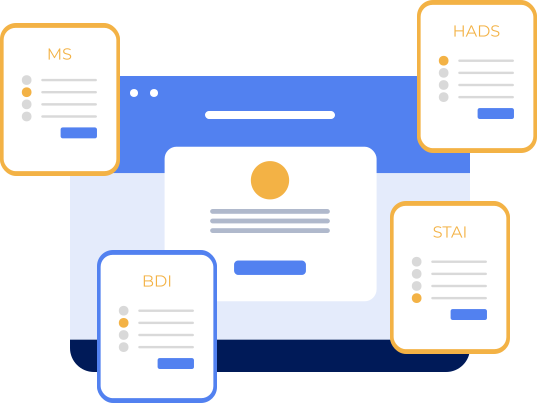

Підготовлене професійними психологами
Як зрозуміти свій стан чи стан близької людини?
Ми створили персональне тестування, яке:
-
-
Дає можливість виділити точки болю та “прожити” їх разом зі спеціалістом
-
Дає зрозуміти, в яких випадках ви здатні впоратись самотужки
Допомагає діагностувати: депресію тривожність посттравматичний стресовий розлад
Про нас

Для поглибленого вивчення вашого психологічного стану, тестування опирається на Міссісіпську шкалу для оцінки посттравматичних реакцій та Госпітальну шкалу тривоги і депресії, а також в результаті на дані шкали депресії Бека та шкали тривоги Спілберга.
Якщо ж ви хочете оформити запит від імені людини, яка не здатна звернутись самостійно – опишіть її стан та основні тригерні точки у спеціальній формі
Консультація з психологом
Досвід, отриманий від початку війни, дає право говорити, що українці – сильні і часом можуть самі собі зарадити. Але ніхто не повинен залишатись наодинці зі своїм болем. Навіть найсильніший не повинен справлятися з цим самостійно.
Ви не самотні. Підтримка зовсім поруч з вами!
На базі проведених опитувань консультація вже містить в собі потрібні матеріали і техніки та завжди відбувається у форматі дружньої розмови. Розмови двох небайдужих людей, які разом шукають вихід.
Чи можу я собі допомогти?
Завдяки простим порадам кваліфікованих психологів щодня вдається повертати із стану тривоги сотні людей. До кожної проблеми є своє завдання або вправа, виконавши які, людина має шанс відновитись.
Завантажте через bot низку порад Yednai, щоб “тут і зараз” в імпульсивних моментах зберігати спокій.
Користуючись підказками, кожен може пройти шлях від тестування до індивідуальної консультації, щоб подолати паніку, стрес та апатію.